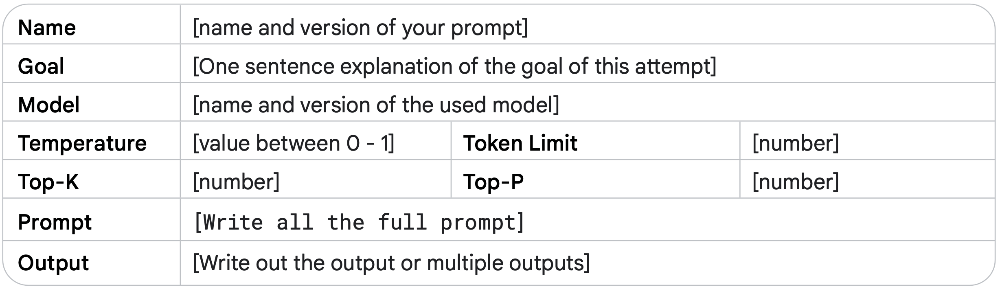

1. مقدمه
هنگام فکر کردن درباره ورودی و خروجی یک مدل زبانی بزرگ (LLM)، یک دستور متنی، ورودیای است که مدل برای پیشبینی یک خروجی خاص استفاده میکند.
شما نیازی نیست یک دانشمند داده یا مهندس یادگیری ماشین باشید - هر کسی میتواند یک پرامپت بنویسد.
با این حال، ساخت موثرترین پرامپت میتواند پیچیده باشد. جنبههای مختلفی از پرامپت شما بر کارآمدی آن تأثیر میگذارد، مثل مدلی که استفاده میکنید، دادههای آموزشی مدل، تنظیمات مدل، انتخاب کلمات شما، سبک و لحن، ساختار کانتکس همگی مهم هستند. بنابراین، مهندسی پرامپت یک فرآیند تکرارشونده است. پرامپتهای نامناسب میتوانند منجر به پاسخهای مبهم و نادرست شوند و میتوانند توانایی مدل برای ارائه خروجی معنادار را مختل کنند.
وقتی با چتبات Gemini صحبت میکنید، اساساً پرامپتها را مینویسید، اما این مقاله بر نوشتن پرامپتها برای مدل Gemini در Vertex AI یا با استفاده از API تمرکز دارد، زیرا با پرامپت کردن مستقیم مدل، شما به تنظیمات مانند دما و غیره دسترسی خواهید داشت.
این مقاله به طور مفصل درباره مهندسی پرامپت بحث میکند. ما به تکنیکهای مختلف پرامپت نگاه خواهیم کرد تا به شما در شروع کار کمک کنیم و نکات و بهترین شیوهها را به اشتراک میگذاریم تا یک متخصص پرامپت شوید. همچنین برخی از چالشهایی که ممکن است هنگام ساخت پرامپتها با آنها مواجه شوید را بررسی خواهیم کرد.
2. مفهوم مهندسی پرامپت
به یاد داشته باشید که یک LLM چگونه کار میکند؛ این یک موتور پیشبینی است. مدل متن متوالی را به عنوان ورودی میگیرد و سپس پیشبینی میکند که توکن بعدی چه باید باشد، بر اساس دادههایی که با آنها آموزش دیده است. LLM برای انجام این کار بارها و بارها عملیاتی میشود، با افزودن توکن پیشبینی شده قبلی به انتهای متن متوالی برای پیشبینی توکن بعدی. پیشبینی توکن بعدی بر اساس رابطه بین آنچه در توکنهای قبلی است و آنچه LLM در طول آموزش خود دیده است، انجام میشود.
وقتی یک پرامپت مینویسید، در تلاش هستید تا LLM را برای پیشبینی توالی درست توکنها تنظیم کنید. مهندسی پرامپت فرآیند طراحی پرامپتهای با کیفیت بالا است که LLMها را برای تولید خروجیهای دقیق هدایت میکند. این فرآیند شامل آزمایش برای یافتن بهترین پرامپت، بهینهسازی طول پرامپت و ارزیابی سبک نوشتاری و ساختار یک پرامپت در رابطه با وظیفه است. در زمینه پردازش زبان طبیعی و LLMها، یک پرامپت ورودیای است که به مدل ارائه میشود تا پاسخ یا پیشبینی را تولید کند.
این پرامپتها میتوانند برای دستیابی به انواع مختلفی از وظایف درک و تولید مانند خلاصهسازی متن، استخراج اطلاعات، پرسش و پاسخ، طبقهبندی متن، ترجمه زبان یا کد، تولید کد و مستندسازی کد یا استدلال استفاده شوند.
لطفاً به راهنماهای پرامپت Google با مثالهای ساده و موثر پرامپت مراجعه کنید.
هنگام مهندسی پرامپت، با انتخاب یک مدل شروع خواهید کرد. ممکن است نیاز باشد پرامپتها برای مدل خاص شما بهینه شوند، صرف نظر از اینکه از مدلهای زبانی Gemini در Vertex AI، GPT، Claude یا یک مدل منبع باز مانند Gemma یا LLaMA استفاده میکنید.
علاوه بر پرامپت، شما همچنین نیاز به آزمایش با تنظیمات مختلف یک LLM خواهید داشت.
3. تنظیمات خروجی مدلهای زبانی بزرگ
پس از انتخاب مدل، باید تنظیمات مدل را مشخص کنید. اکثر LLMها با گزینههای تنظیم مختلفی ارائه میشوند که خروجی LLM را کنترل میکنند. مهندسی پرامپت موثر نیازمند تنظیم بهینه این پیکربندیها برای وظیفه شما است.
طول خروجی
یک تنظیم مهم، تعداد توکنهایی است که در یک پاسخ تولید میشوند. تولید توکنهای بیشتر نیازمند محاسبات بیشتری از LLM است، که منجر به مصرف انرژی بالاتر، زمانهای پاسخ احتمالاً کندتر و هزینههای بالاتر میشود.
کاهش طول خروجی LLM باعث نمیشود که LLM از نظر سبک یا متنی در خروجی که ایجاد میکند مختصرتر شود، فقط باعث میشود که LLM پس از رسیدن به محدودیت، پیشبینی توکنهای بیشتر را متوقف کند. اگر نیازهای شما به طول خروجی کوتاه نیاز دارد، احتمالاً باید پرامپت خود را نیز برای تطبیق با آن مهندسی کنید.
محدودیت طول خروجی به ویژه برای برخی از تکنیکهای پرامپت LLM، مانند ReAct، مهم است، جایی که LLM پس از پاسخی که میخواهید، به انتشار توکنهای بیفایده ادامه خواهد داد.
توجه داشته باشید، تولید توکنهای بیشتر نیازمند محاسبات بیشتری از LLM است، که منجر به مصرف انرژی بالاتر و زمانهای پاسخ احتمالاً کندتر میشود، که منجر به هزینههای بالاتر میشود.
کنترلهای سمپلینگ
LLMها رسماً یک توکن واحد را پیشبینی نمیکنند. در عوض، LLMها احتمالات را برای اینکه توکن بعدی چه میتواند باشد پیشبینی میکنند، با هر توکن در واژگان LLM که یک احتمال دریافت میکند. سپس از آن احتمالات توکن سمپلینگ میشود تا مشخص شود توکن بعدی تولید شده چه خواهد بود.
دما (Temperature)، Top-K و Top-P رایجترین تنظیمات پیکربندی هستند که تعیین میکنند چگونه احتمالات توکن پیشبینی شده برای انتخاب یک توکن خروجی واحد پردازش میشوند.
دما (Temperature)
دما درجه تصادفی بودن در انتخاب توکن را کنترل میکند. دماهای پایینتر برای پرامپتهایی که انتظار پاسخ قطعیتری دارند مناسب هستند، در حالی که دماهای بالاتر میتوانند منجر به نتایج متنوعتر یا غیرمنتظره شوند. دمای 0 (greedy decoding) قطعیت را نشان میدهد: توکن با بالاترین احتمال همیشه انتخاب میشود (اگرچه توجه داشته باشید که اگر دو توکن دارای همان بالاترین احتمال پیشبینی شده باشند، بسته به نحوه پیادهسازی شکستن تساوی، ممکن است همیشه با دمای 0 خروجی یکسانی دریافت نکنید).
دماهای نزدیک به حداکثر تمایل به ایجاد خروجی تصادفیتر دارند. و همانطور که دما بالاتر و بالاتر میرود، همه توکنها به طور یکسان احتمال دارند که توکن پیشبینی شده بعدی باشند.
کنترل دمای Gemini را میتوان به روشی مشابه با تابع softmax که در یادگیری ماشین استفاده میشود درک کرد. تنظیم دمای پایین، دمای پایین softmax (T) را منعکس میکند، که بر یک دمای ترجیحی واحد با قطعیت بالا تأکید میکند. تنظیم دمای بالاتر Gemini مانند دمای بالای softmax است، که طیف وسیعتری از دماها در اطراف تنظیم انتخاب شده را قابل قبولتر میکند. این عدم قطعیت افزایش یافته، سناریوهایی را در نظر میگیرد که در آن یک دمای دقیق و سختگیرانه ممکن است ضروری نباشد، مانند زمانی که با خروجیهای خلاقانه آزمایش میکنید.
Top-K و Top-P
Top-K و Top-P دو تنظیم سمپلینگ هستند که در LLMها استفاده میشوند تا توکن بعدی پیشبینی شده را از توکنهایی با بالاترین احتمالات پیشبینی شده محدود کنند. مانند دما، این تنظیمات سمپلینگ، تصادفی بودن و تنوع متن تولید شده را کنترل میکنند.
- سمپلینگ Top-K، K توکن با بیشترین احتمال را از توزیع پیشبینی شده مدل انتخاب میکند. هرچه Top-K بالاتر باشد، خروجی مدل خلاقانهتر و متنوعتر است؛ هرچه Top-K پایینتر باشد، خروجی مدل محدودتر و واقعیتر است. Top-K برابر با 1 معادل greedy decoding است.
- سمپلینگ Top-P، توکنهای برتری را انتخاب میکند که احتمال تجمعی آنها از یک مقدار خاص (P) تجاوز نکند. مقادیر برای P از 0 تا 1 (تمام توکنها در واژگان LLM) متغیر است.
بهترین راه برای انتخاب بین Top-K و Top-P، آزمایش با هر دو روش (یا هر دو با هم) و دیدن اینکه کدام یک نتایجی را که به دنبال آن هستید تولید میکند.
ترکیب تنظیمات
انتخاب بین Top-K، Top-P، دما و تعداد توکنهایی که باید تولید شوند، به کاربرد خاص و نتیجه مورد نظر بستگی دارد، و تنظیمات همگی بر یکدیگر تأثیر میگذارند. همچنین مهم است که مطمئن شوید درک میکنید که مدل انتخابی شما چگونه تنظیمات سمپلینگ مختلف را با هم ترکیب میکند.
اگر دما، Top-K و Top-P همگی در دسترس باشند (مانند Vertex Studio)، توکنهایی که هم معیارهای Top-K و هم Top-P را برآورده میکنند، نامزدهایی برای توکن پیشبینی شده بعدی هستند، و سپس دما برای سمپلینگ از توکنهایی که از معیارهای Top-K و Top-P عبور کردهاند اعمال میشود. اگر فقط Top-K یا Top-P در دسترس باشد، رفتار یکسان است اما فقط از یک تنظیم Top-K یا P استفاده میشود.
اگر دما در دسترس نباشد، از هر توکنی که معیارهای Top-K و/یا Top-P را برآورده میکند، به صورت تصادفی انتخاب میشود تا یک توکن پیشبینی شده بعدی واحد تولید شود.
در تنظیمات افراطی یک مقدار پیکربندی سمپلینگ، آن تنظیم سمپلینگ یا تنظیمات پیکربندی دیگر را لغو میکند یا بیاهمیت میشود.
- اگر دما را روی 0 تنظیم کنید، Top-K و Top-P بیاهمیت میشوند - توکن با بیشترین احتمال، توکن پیشبینی شده بعدی میشود. اگر دما را به شدت بالا تنظیم کنید (بالای 1 - عموماً به 10ها)، دما بیاهمیت میشود و از هر توکنی که از معیارهای Top-K و/یا Top-P عبور میکند، به صورت تصادفی سمپلینگ میشود تا یک توکن پیشبینی شده بعدی انتخاب شود.
- اگر Top-K را روی 1 تنظیم کنید، دما و Top-P بیاهمیت میشوند. فقط یک توکن از معیارهای Top-K عبور میکند، و آن توکن، توکن پیشبینی شده بعدی است. اگر Top-K را به شدت بالا تنظیم کنید، مانند اندازه واژگان LLM، هر توکن با احتمال غیر صفر برای اینکه توکن بعدی باشد، معیارهای Top-K را برآورده میکند و هیچ کدام انتخاب نمیشوند.
- اگر Top-P را روی 0 (یا یک مقدار بسیار کوچک) تنظیم کنید، اکثر پیادهسازیهای سمپلینگ LLM فقط توکن با بیشترین احتمال را در نظر میگیرند تا معیارهای Top-P را برآورده کند، که دما و Top-K را بیاهمیت میکند. اگر Top-P را روی 1 تنظیم کنید، هر توکن با احتمال غیر صفر برای اینکه توکن بعدی باشد، معیارهای Top-P را برآورده میکند، و هیچ کدام انتخاب نمیشوند.
به عنوان یک نقطه شروع کلی، دمای 0.2، Top-P برابر با 0.95 و Top-K برابر با 30 به شما نتایج نسبتاً منسجمی میدهد که میتواند خلاقانه باشد اما نه به طور افراطی. اگر میخواهید نتایج به ویژه خلاقانهای داشته باشید، سعی کنید با دمای 0.9، Top-P برابر با 0.99 و Top-K برابر با 40 شروع کنید. و اگر میخواهید نتایج کمتر خلاقانهای داشته باشید، سعی کنید با دمای 0.1، Top-P برابر با 0.9 و Top-K برابر با 20 شروع کنید. در نهایت، اگر وظیفه شما همیشه یک پاسخ صحیح واحد دارد (مثلاً، پاسخ به یک مسئله ریاضی)، با دمای 0 شروع کنید.
توجه: با آزادی بیشتر (دما، Top-K، Top-P و توکنهای خروجی بالاتر)، LLM ممکن است متنی تولید کند که کمتر مرتبط است.
هشدار: آیا تا به حال پاسخی را دیدهاید که با مقدار زیادی کلمات پرکننده به پایان برسد؟ این همچنین به عنوان "باگ حلقه تکرار" شناخته میشود، که یک مشکل رایج در مدلهای زبانی بزرگ است که در آن مدل در یک چرخه گیر میکند، به طور مکرر همان کلمه (پرکننده)، عبارت یا ساختار جمله را تولید میکند، که اغلب با تنظیمات نامناسب دما و top-k/top-p تشدید میشود. این میتواند هم در تنظیمات دمای پایین و هم بالا رخ دهد، اگرچه به دلایل مختلف. در دماهای پایین، مدل بیش از حد قطعی میشود، به شدت به مسیر با بالاترین احتمال میچسبد، که میتواند منجر به یک حلقه شود اگر آن مسیر به متن تولید شده قبلی بازگردد. برعکس، در دماهای بالا، خروجی مدل بیش از حد تصادفی میشود، احتمال اینکه یک کلمه یا عبارت انتخاب شده به طور تصادفی، به شانس، به یک حالت قبلی بازگردد را افزایش میدهد، که به دلیل تعداد زیاد گزینههای موجود، یک حلقه ایجاد میکند. در هر دو مورد، فرآیند سمپلینگ مدل "گیر میکند"، که منجر به خروجی یکنواخت و بیفایده میشود تا زمانی که پنجره خروجی پر شود. حل این مشکل اغلب نیازمند تنظیم دقیق مقادیر دما و top-k/top-p برای یافتن تعادل بهینه بین قطعیت و تصادفی بودن است.
4. تکنیکهای مهندسی پرامپت
مدلهای زبانی بزرگ (LLM) برای پیروی از دستورالعملها تنظیم شدهاند و روی مقادیر زیادی از دادهها آموزش دیدهاند تا بتوانند یک پرامپت را درک کنند و پاسخی تولید کنند. اما LLMها کامل نیستند؛ هرچه متن پرامپت شما واضحتر باشد، برای LLM بهتر است تا متن بعدی محتمل را پیشبینی کند. علاوه بر این، تکنیکهای خاصی که از نحوه آموزش LLMها و نحوه کار آنها استفاده میکنند، به شما کمک میکنند تا نتایج مرتبط را از LLMها دریافت کنید.
حال که درک میکنیم مهندسی پرامپت چیست و چه چیزی نیاز دارد، بیایید به برخی از مثالهای مهمترین تکنیکهای پرامپت بپردازیم.
پرامپت زیرو-شات (Zero-shot)
یک پرامپت زیرو-شات سادهترین نوع پرامپت است. که فقط توصیفی از یک وظیفه و برخی متنها را برای شروع کار LLM ارائه میدهد. این ورودی میتواند هر چیزی باشد: یک سؤال، شروع یک داستان، یا دستورالعملها. نام زیرو-شات به معنای 'بدون مثال' است.
بیایید از Vertex AI Studio (برای زبان) در Vertex AI استفاده کنیم، که یک محیط آزمایشی برای تست پرامپتها ارائه میدهد. در جدول 1، یک مثال پرامپت زیرو-شات برای طبقهبندی نقدهای فیلم خواهید دید.
فرمت جدول که در زیر استفاده شده است، روش عالی برای مستندسازی پرامپتها است. پرامپتهای شما احتمالاً قبل از اینکه در یک کد قرار بگیرند، از چندین تکرار عبور خواهند کرد، بنابراین مهم است که کار مهندسی پرامپت خود را به روشی منظم و ساختاریافته پیگیری کنید. اطلاعات بیشتر در مورد این فرمت جدول، اهمیت پیگیری کار مهندسی پرامپت و فرآیند توسعه پرامپت در بخش بهترین شیوهها در ادامه این فصل ("مستندسازی پرامپت") آمده است.
دمای مدل باید روی عدد پایینی تنظیم شود، زیرا نیازی به خلاقیت نیست، و ما از مقادیر پیشفرض Top-K و Top-P مدل gemini-pro استفاده میکنیم، که به طور مؤثر هر دو تنظیم را غیرفعال میکند (به 'تنظیمات خروجی LLM' در بالا مراجعه کنید). به خروجی تولید شده توجه کنید. کلمات "disturbing" و "masterpiece" باید پیشبینی را کمی پیچیدهتر کنند، زیرا هر دو کلمه در یک جمله استفاده شدهاند.
مثال پرامپت زیرو-شات:

وقتی زیرو-شات کار نمیکند، میتوانید نمونهها یا مثالهایی را در پرامپت ارائه دهید، که منجر به پرامپت "تک-شات" و "چند-شات" میشود.
پرامپت تک-شات و چند-شات (One-shot & Few-shot)
هنگام ایجاد پرامپتها برای مدلهای هوش مصنوعی، ارائه مثالها مفید است. این مثالها میتوانند به مدل کمک کنند تا آنچه را که از آن میخواهید درک کند. مثالها به ویژه زمانی مفید هستند که میخواهید مدل را به سمت یک ساختار یا الگوی خروجی خاص هدایت کنید.
یک پرامپت تک-شات، یک مثال واحد ارائه میدهد، از این رو نام تک-شات. ایده این است که مدل مثالی دارد که میتواند از آن تقلید کند تا بهترین عملکرد را در انجام وظیفه داشته باشد.
یک پرامپت چند-شات چندین مثال ارائه میدهد. این به مدل کمک میکند تا الگوها را بهتر درک کند و پاسخهای دقیقتری تولید کند.
مثال پرامپت چند-شات:


System، Context و Role Prompting همگی تکنیکهایی هستند که برای هدایت نحوه تولید متن توسط مدلهای زبانی بزرگ (LLMs) استفاده میشوند، اما هر کدام روی جنبههای متفاوتی تمرکز دارند:
- System Prompting: این تکنیک، کانتکس کلی و هدف اصلی را برای مدل زبانی مشخص میکند. به زبان ساده، مثل این است که به مدل بگوییم «قراره چی کار کنی». مثلاً بهش میگیم که باید یک متن رو ترجمه کنه، یا یک نظر رو دستهبندی کنه. این یه تصویر بزرگ از وظیفه مدل بهش میده.
- Contextual Prompting: این تکنیک، جزئیات خاص یا اطلاعات پسزمینهای رو که به موضوع یا وظیفه فعلی مربوط میشه، به مدل میده. مثلاً اگه ازش سوالی پرسیده بشه، این اطلاعات به مدل کمک میکنه بفهمه دقیقاً چی خواسته شده و جوابش رو بر اساس اون تنظیم کنه.
- Role Prompting: اینجا به مدل یک شخصیت یا هویت خاص میدیم که طبق اون رفتار کنه. مثلاً میگیم «تو یه معلم هستی» یا «مثل یه دوست حرف بزن». این کار باعث میشه جوابهایی که مدل میده، با اون نقش و دانش و رفتاری که براش تعریف کردیم، همخونی داشته باشه.
شباهتها و تفاوتها بین System، Contextual و Role Prompting ممکنه همپوشانی زیادی وجود داشته باشه. مثلاً یه دستوری که به مدل یه نقش میده (مثل «تو یه مترجم باش»)، میتونه همزمان زمینهای هم داشته باشه (مثل «این متن رو از فارسی به انگلیسی ترجمه کن»). ولی هر کدوم یه هدف اصلی متفاوت دارن:
پرامپت سیستمی (System Prompting)
پرامپت سیستمی یک روش برای تنظیم رفتار کلی مدل است. این به شما اجازه میدهد تا به مدل بگویید چه نوع دستیاری باشد، چگونه پاسخ دهد، و چه محدودیتهایی داشته باشد.
در جدول ۳، یک پرامپت سیستمی (System Prompt) ارائه شده است که در آن، من اطلاعات بیشتری درباره نحوه بازگرداندن خروجی مشخص کردهام.
من پارامتر «دما» (Temperature) را برای دستیابی به سطح خلاقیت بالاتر، افزایش دادم و همچنین محدودیت توکن (Token Limit) بالاتری را تعیین کردم.
با این حال، به دلیل دستورالعمل واضحی که درباره نحوه ارائه خروجی داده بودم، مدل (علیرغم تنظیمات دما و توکن بالا که معمولاً باعث تولید متن بیشتر یا خلاقانهتر میشوند) متن اضافهای تولید نکرد و دقیقاً به فرمت درخواستی من پایبند ماند.
مثال پرامپت سیستمی:
پرامپتهای سیستمی (System Prompts) میتوانند برای تولید خروجیهایی که نیازمندیهای خاصی دارند، بسیار مفید باشند.
علت نامگذاری «پرامپت سیستمی» این است که در واقع شما دارید یک وظیفه یا دستورالعمل اضافی به سیستم (هوش مصنوعی) میدهید (علاوه بر درخواست اصلیتان).
مثال:
میتوانید از یک پرامپت سیستمی استفاده کنید تا یک قطعه کد (code snippet) تولید کند که با یک زبان
برنامهنویسی خاص سازگار باشد.
یا میتوانید از آن برای دریافت خروجی با یک ساختار مشخص استفاده کنید.
به جدول ۴ نگاهی بیندازید؛ در آنجا من (با استفاده از پرامپت سیستمی) مشخص کردهام که خروجی را در قالب JSON دریافت کنم.

دریافت خروجی به صورت آبجکتهای JSON از پرامپتهایی که داده استخراج میکنند، مزایای مشخصی دارد:
عدم نیاز به ساخت دستی JSON: در یک کاربرد واقعی (real-world application)، دیگر لازم نیست این فرمت JSON را به صورت دستی (پس از دریافت پاسخ از مدل) ایجاد کنید. مدل مستقیماً خروجی را با این ساختار تحویل میدهد.
دریافت داده مرتبشده: میتوانید دادهها را از همان ابتدا به صورت مرتبشده (sorted order) دریافت کنید. این ویژگی هنگام کار با دادههای تاریخ و زمان (datetime objects) بسیار کاربردی است، چون مرتبسازی آنها میتواند چالشبرانگیز باشد.
مهمترین مزیت: ساختارمند کردن و کاهش خطا: درخواست خروجی با فرمت JSON، مدل را مجبور به ایجاد یک ساختار مشخص میکند. این کار به طرز قابل توجهی پدیده توهمزایی یا تولید اطلاعات نادرست و بیاساس (Hallucinations) توسط مدل را محدود میسازد، زیرا مدل باید اطلاعات را دقیقاً در قالب کلیدها و مقادیر تعریفشده جای دهد.
کاربرد دیگر پرامپتهای سیستمی: ایمنی و کنترل محتوا
پرامپتهای سیستمی همچنین میتوانند برای کنترل ایمنی (Safety) و جلوگیری از تولید محتوای نامناسب یا سمی (Toxicity) بسیار مفید باشند. برای کنترل خروجی، کافی است یک خط دستورالعمل اضافی به پرامپت خود بیفزایید، مانند: «شما باید در پاسخ خود محترمانه باشید.» (You should be respectful in your answer.)
پرامپت نقشدار (Role Prompting)
در پرامپت نقشدار، از مدل میخواهید نقش خاصی را بپذیرد. این میتواند به تولید پاسخهای تخصصیتر و متمرکزتر کمک کند.
«تعیین نقش» یک روش در نوشتن پرامپت برای هوش مصنوعی است که در آن شما به مدل یک نقش مشخص میدهید (مثلاً میگویید "تو یک معلم هستی").
این کار به مدل کمک میکند تا پاسخهای مرتبطتر و مفیدتری تولید کند، چون مدل میتواند جوابهایش را دقیقاً بر اساس نقشی که به او دادهاید، تنظیم کند و شکل دهد.
مثال: میتوانید به مدل هوش مصنوعی نقش یک ویراستار کتاب، یک معلم مهدکودک، یا یک سخنران انگیزشی را بدهید.
وقتی نقش مدل مشخص شد، میتوانید درخواستهایی به او بدهید که مختص همان نقش باشند. برای مثال، میتوانید از مدلی که نقش معلم را دارد بخواهید یک طرح درس بنویسد تا بعداً شما آن را بررسی کنید.
به جدول ۵ نگاهی بیندازید؛ در آنجا مدل نقش یک راهنمای سفر را ایفا میکند.

مثال بالا نمونهای از ایفای نقش یک کارمند آژانس مسافرتی توسط مدل هوش مصنوعی را نشان میدهد. اگر شما همین نقش را به «معلم جغرافیا» تغییر دهید، متوجه خواهید شد که پاسخ کاملاً متفاوتی دریافت میکنید.
تعریف یک دیدگاهِ نقشمحور برای مدل هوش مصنوعی، مانند ارائه یک الگو (blueprint) به آن است. این الگو مشخص میکند که شما چه لحن، سبک و تخصص متمرکزی را از مدل انتظار دارید.
در نتیجه، این کار به بهبود کیفیت، مرتبط بودن (relevance) و اثربخشی (effectiveness) خروجی نهایی شما کمک میکند.

در ادامه چند سبک نوشتاری آورده شده که به نظر من مؤثر هستند و میتوانید از آنها استفاده کنید:
- چالشی (Confrontational): کمی تند و مستقیم، برای به چالش کشیدن.
- توصیفی (Descriptive): با جزئیات زیاد و تصویرسازی.
- مستقیم (Direct): بدون حاشیه و سر اصل مطلب.
- رسمی (Formal): با ادبیات و ساختار رسمی.
- طنزآمیز (Humorous): شوخطبعانه و با چاشنی خنده.
- تأثیرگذار (Influential): برای اثرگذاری بر مخاطب.
- غیررسمی (Informal): دوستانه و خودمانی.
- الهامبخش (Inspirational): برای ایجاد انگیزه و امید.
- متقاعدکننده (Persuasive): برای قانع کردن مخاطب.
حالا بیایید درخواست (پرامپت) خودمان در جدول ۶ را تغییر دهیم تا سبکی طنزآمیز و الهامبخش داشته باشد.
پرامپت کانتکسچوال (Contextual Prompting)
پرامپت کانتکسچوال شامل ارائه اطلاعات زمینهای اضافی به مدل است تا به آن کمک کند پاسخهای دقیقتر و مرتبطتری تولید کند.
مثال پرامپت Contextual:
پرامپت استپبک (Step-back Prompting)
پرامپت استپبک (Step-Back Prompting) یک تکنیک برای بهبود عملکرد مدلهای زبانی بزرگ (LLMs) است. در این روش، ابتدا به مدل یک سوال کلی مرتبط با وظیفه خاص داده میشود. سپس پاسخ این سوال کلی بهعنوان ورودی به یک درخواست بعدی برای انجام وظیفه خاص داده میشود. این گام به عقب به مدل اجازه میدهد تا دانش پسزمینه مرتبط و فرآیندهای استدلالی را فعال کند، قبل از اینکه بخواهد مسئله خاص را حل کند.
با در نظر گرفتن اصول کلی و زیربنایی، مدلهای زبانی میتوانند پاسخهایی دقیقتر و عمیقتر تولید کنند. پرامپت استپبک مدل را تشویق میکند تا بهصورت انتقادی فکر کند و دانش خودش را به روشهای جدید و خلاقانه به کار ببرد. این روش باعث میشود درخواست نهایی که وظیفه را انجام میدهد، از دانش بیشتری در پارامترهای مدل استفاده کند، در مقایسه با زمانی که مدل مستقیماً با یک درخواست خاص روبهرو میشود.
همچنین، این روش میتواند به کاهش سوگیریها در پاسخهای مدل کمک کند، چون بهجای تمرکز روی جزئیات خاص، روی اصول کلی متمرکز میشود.
مثالها برای درک بهتر برای فهم بهتر اینکه چطور پرامپت استپبک میتواند نتایج را بهبود بدهد، بیایم چند مثال رو بررسی کنیم. ابتدا یک درخواست سنتی (جدول 8) رو نگاه میکنیم و بعد اون رو با یک درخواست استپبک (جدول 9) مقایسه میکنیم.
مثال پرامپت استپبک:

وقتی دما (Temperature) رو روی 1 تنظیم میکنید، ممکنه برای یه خط داستانی کلی نوشتههای خلاقانهای به دست بیارید، ولی این نوشتهها معمولاً تصادفی و کلی هستند.
آره، این موضوعات به نظر میرسه برای یه بازی ویدیویی اولشخص مناسب باشن. بیایم برگردیم به درخواست قبلی، ولی این بار پاسخ سوال استپبک رو بهعنوان زمینه (Context) اضافه کنیم و ببینیم چی برمیگردونه
این شبیه یه بازی ویدیویی جالب به نظر میرسه! با استفاده از تکنیکهای درخواستنویسی استپبک میتونید دقت درخواستهاتون رو بالاتر ببرید
زنجیره تفکر (Chain of Thought)
زنجیره تفکر (CoT) تکنیکی است که توانایی استدلال مدلهای زبانی بزرگ (LLMs) را با تولید گامهای استدلالی میانی بهبود میدهد. این روش به مدل کمک میکند تا پاسخهای دقیقتری تولید کند. میتوانید CoT را با پرامپت Few-Shot ترکیب کنید تا در وظایف پیچیدهتر که نیاز به استدلال قبل از پاسخ دارند، نتایج بهتری بگیرید.
مزایای CoT:
- تلاش کم، تأثیر زیاد: این روش خیلی مؤثره و نیازی به تنظیم دقیق (Finetuning) مدل ندارد، یعنی با مدلهای آماده (Off-the-Shelf LLMs) بهخوبی کار میکند.
- شفافیت و تفسیرپذیری: با CoT میتوانید از پاسخهای مدل یاد بگیرید و گامهای استدلالی که دنبال کرده را ببینید. اگه مشکلی پیش بیاد، میتونید اون رو پیدا کنید.
- پایداری بین نسخهها: به نظر میرسد CoT باعث میشود وقتی از نسخههای مختلف مدلهای زبانی استفاده میکنید، عملکرد درخواست شما کمتر تغییر کند. یعنی درخواستهایی که از زنجیره تفکر استفاده میکنند، نسبت به درخواستهای بدون استدلال، بین مدلهای مختلف پایداری بیشتری دارند.
البته معایبی هم وجود دارد که تا حدی قابل پیشبینی هستند.
معایب زنجیره تفکر
پاسخ مدل شامل گامهای استدلالی زنجیره تفکر است، که یعنی توکنهای خروجی بیشتری تولید میشود. این باعث میشود هزینه پیشبینیها بیشتر بشه و زمان بیشتری طول بکشه.
برای توضیح مثال در جدول 11، ابتدا بیایم یه درخواست بدون استفاده از CoT بنویسیم تا نقاط ضعف یک مدل زبانی بزرگ رو نشون بدیم.
مثال زنجیره تفکر:
خوب، این جواب کاملاً اشتباهه! واقعیت اینه که مدلهای زبانی بزرگ (LLMs) اغلب توی کارهای ریاضی به مشکل میخورن و ممکنه حتی برای یه کار ساده مثل ضرب دو تا عدد، جواب اشتباه بدن. دلیلش اینه که این مدلها روی حجم زیادی از متن آموزش دیدن و ریاضیات ممکنه نیاز به یه روش متفاوت داشته باشه. حالا بیایم ببینیم اگه از گامهای استدلالی میانی استفاده کنیم، آیا خروجی بهتر میشه یا نه.

خوبه، حالا جواب نهایی درسته! این اتفاق افتاد چون ما به مدل دستور واضح دادیم که هر گام رو توضیح بده، به جای اینکه فقط یه جواب بده. جالبه که مدل 17 سال افزایش رو جمع کرد. اگه من بودم، توی ذهنم فاصله سالها بین خودم و پارتنرم رو حساب میکردم و بعد جمعشون میکردم، مثلاً (20+(9-3)). بیایم به مدل کمک کنیم یه کم شبیه من فکر کنه!
جدول 12 یه نمونه از زنجیره تفکر بدون نمونه (Zero-Shot CoT) هست. زنجیره تفکر وقتی با تکنمونه (Single-Shot) یا چندنمونه (Few-Shot) ترکیب بشه، خیلی قدرتمند میشه، همونطور که توی جدول 13 میتونید ببینید.
زنجیره تفکر برای کارهای مختلفی مفیده. چند مثال:
- تولید کد (Code Generation): میتونید درخواست رو به چند گام تقسیم کنید و هر گام رو به خطوط خاصی از کد مرتبط کنید.
- ایجاد داده مصنوعی (Synthetic Data): مثلاً وقتی یه نقطه شروع دارید، مثل «محصول اسمش XYZ هست، یه توضیح بنویس و مدل رو از فرضیاتی که بر اساس اسم محصول میکنی، هدایت کن.»
- به طور کلی، هر کاری که بشه با صحبت کردن و توضیح دادن حلش کرد، کاندیدای خوبی برای زنجیره تفکره. اگه بتونید گامهای حل مسئله رو توضیح بدید، زنجیره تفکر رو امتحان کنید!
خودسازگاری (Self-consistency)
خودسازگاری یک تکنیک است که در آن از مدل خواسته میشود چندین مسیر استدلال را برای یک مسئله در نظر بگیرد و سپس پاسخی را انتخاب کند که بیشترین سازگاری را دارد.
گرچه مدلهای زبانی بزرگ (LLMs) در وظایف مختلف پردازش زبان طبیعی (NLP) موفقیتهای چشمگیری داشتهاند، اما توانایی آنها در استدلال اغلب بهعنوان یک محدودیت شناخته میشود که فقط با بزرگتر کردن اندازه مدل حل نمیشود. همونطور که در بخش قبلی درباره زنجیره تفکر (Chain of Thought - CoT) یاد گرفتیم، میشه به مدل دستور داد که مثل یه انسان، گامهای استدلالی رو برای حل مسئله تولید کنه. اما CoT از یه روش ساده به اسم رمزگشایی حریصانه (Greedy Decoding) استفاده میکنه که اثرگذاریش رو محدود میکنه.
خود-سازگاری (Self-Consistency) یه روش پیشرفتهست که نمونهبرداری (Sampling) و رأیگیری اکثریت (Majority Voting) رو ترکیب میکنه تا مسیرهای استدلالی متنوعی تولید کنه و پاسخی که بیشترین سازگاری رو داره انتخاب کنه. این روش دقت و انسجام پاسخهای تولیدشده توسط مدلهای زبانی رو بهبود میده. خود-سازگاری یه جور احتمال شبهتصادفی (Pseudo-Probability) برای درست بودن یه پاسخ ارائه میده، ولی خب، هزینههای بالایی هم داره.
مراحل خود-سازگاری- تولید مسیرهای استدلالی متنوع: همون درخواست (Prompt) چندین بار به مدل داده میشه. تنظیم دمای بالا (High Temperature) باعث میشه مدل مسیرهای استدلالی و دیدگاههای متفاوتی برای مسئله تولید کنه.
- استخراج پاسخ از هر خروجی: از هر پاسخ تولیدشده، جواب نهایی جدا میشه.
- انتخاب شایعترین پاسخ: پاسخی که بیشترین تکرار رو داره، بهعنوان جواب نهایی انتخاب میش
مثال: سیستم طبقهبندی ایمیل
بیایم یه مثال از یه سیستم طبقهبندی ایمیل ببینیم که ایمیلها رو به دو دسته مهم (IMPORTANT) یا
غیرمهم (NOT IMPORTANT) تقسیم میکنه. یه درخواست زنجیره تفکر بدون نمونه (Zero-Shot CoT) چندین بار
به مدل فرستاده میشه تا ببینیم آیا پاسخها بعد از هر بار ارسال فرق میکنن یا نه. توجه کنید به
لحن دوستانه، انتخاب کلمات و کنایه (Sarcasm) که توی ایمیل استفاده شده. همه اینها ممکنه مدل زبانی
رو گمراه کنن!
مثال خودسازگاری:

درخت تفکرات (Tree of Thoughts)
درخت تفکرات (ToT) یک گسترش از زنجیره تفکر است که به مدل اجازه میدهد چندین مسیر استدلال را کاوش کند و مسیرهای غیرامیدوارکننده را هرس کند.
حالا که با روشهای «زنجیره افکار» (Chain of Thought - CoT) و «خودسازگاری» (Self-Consistency) آشنا شدیم، بیایید نگاهی به «درخت افکار» (Tree of Thoughts - ToT) بیندازیم.
این روش (ToT)، مفهوم روش CoT را تعمیم میدهد (Generalizes)، زیرا به مدلهای زبانی بزرگ (LLMها) اجازه میدهد تا مسیرهای استدلالی مختلف و متعددی را به طور همزمان کاوش کنند، به جای اینکه فقط یک «زنجیره افکار» خطی و واحد را دنبال کنند. این موضوع در شکل ۱ نمایش داده شده است.
این رویکرد باعث میشود ToT بهویژه برای وظایف پیچیدهای که نیازمند کاوش (Exploration) هستند، بسیار مناسب باشد. سازوکار آن مبتنی بر نگهداری یک «درخت از افکار» است، که در آن هر «فکر» (Thought) نشاندهنده یک دنباله زبانی منسجم است که به عنوان یک گام میانی در مسیر حل یک مسئله عمل میکند. سپس مدل میتواند با انشعاب گرفتن (Branching out) از گرههای (Nodes) مختلف در این درخت، مسیرهای استدلالی مختلف را کاوش کند.
ReAct (Reason & Act)
پرامپت ReAct یک پارادایم جدید در مدلهای زبانی بزرگ (LLMs) هست که به آنها کمک میکند وظایف پیچیده را با استفاده از استدلال به زبان طبیعی (natural language) و ترکیب آن با ابزارهای خارجی (مثل جستجو، code interpreter و غیره) حل کنند. این روش به مدل اجازه میدهد کارهایی مثل تعامل با APIها برای دریافت اطلاعات انجام دهد، که گامی اولیه به سمت مدلسازی ایجنت (Agent Modeling) محسوب میشود.
در ReAct از نحوه عملکرد انسانها در دنیای واقعی تقلید میشود؛ ما هم بهصورت کلامی استدلال میکنیم و برای بهدست آوردن اطلاعات، اقداماتی انجام میدهیم. ReAct در مقایسه با دیگر روشهای Prompt Engineering در حوزههای مختلف عملکرد خوبی دارد.
نحوه کار ReAct، با ترکیب استدلال و عمل در یک حلقه فکر-عمل (thought-action) کار میکند:
ابتدا مدل درباره مسئله استدلال میکند و یک طرح عملی تولید میکند. سپس اقدامات موجود در طرح را اجرا میکند و نتایج را مشاهده میکند. مدل از این مشاهدات برای بهروزرسانی استدلالش استفاده میکند و یک طرح عملی جدید میسازد. این فرآیند ادامه پیدا میکند تا مدل به راهحل مسئله برسد.
آزمایش ReAct در عمل
برای دیدن این روش در عمل، باید کدی بنویسید. در قطعه کد شماره 1، در اینجا از فریمورک LangChain در زبان پایتون به همراه VertexAI (از بسته google-cloud-aiplatform) و بسته google-search-results استفاده شده.
برای اجرای این نمونه، باید یک کلید SerpAPI رایگان از آدرس https://serpapi.com/manage-api-key بسازید و متغیر محیطی SERPAPI_API_KEY را تنظیم کنید
مثال واکنش:
حالا بیایم یه کد پایتون بنویسیم که وظیفهای برای مدل زبانی بزرگ (LLM) تعریف کنه: اعضای گروه متالیکا چندتا بچه دارند؟

توضیح قطعه کد شماره 2
قطعه کد شماره 2 نتیجه رو نشون میده. توجه کنید که ReAct یه زنجیره از پنج جستجو انجام میده.
درواقع، مدل زبانی نتایج جستجوی گوگل رو بررسی میکنه تا اسامی اعضای گروه رو پیدا کنه. بعد، نتایج
رو بهعنوان مشاهدات فهرست میکنه و استدلالش رو برای جستجوی بعدی ادامه میده.
در این کد، مدل متوجه میشه که گروه متالیکا چهار عضو داره. بعد، برای هر عضو گروه جستجو میکنه تا
تعداد بچههاشون رو پیدا کنه و همه رو جمع میزنه. در نهایت، تعداد کل بچهها رو بهعنوان پاسخ
نهایی برمیگردونه.
5. پرامپت برای کدنویسی
مدلهای زبانی بزرگ (LLM) میتوانند در نوشتن، توضیح، ترجمه و اشکالزدایی کد کمک کنند. در این بخش، تکنیکهای پرامپت مختلف برای کار با کد را بررسی میکنیم.
مدل هوش مصنوعی Gemini عمدتاً روی درخواستهای متنی (پرامپتها) تمرکز دارد، و این شامل نوشتن درخواستهایی برای دریافت کد هم میشود. بیایید به محیط Vertex AI Studio برویم و این نوع درخواستها را امتحان کنیم تا چند مثال کدنویسی ببینیم.
نوشتن کد
هنگام درخواست از LLM برای نوشتن کد، ارائه دستورالعملهای واضح و مشخص کردن زبان برنامهنویسی مورد نظر مهم است.
Gemini میتواند نقش یک برنامهنویس را هم برای شما ایفا کند و به شما کمک کند تا با هر زبان برنامهنویسی دلخواهتان کد بنویسید. این کار به شما به عنوان یک برنامهنویس کمک میکند تا فرآیند کدنویسی را سرعت ببخشید.
مثال:تصور کنید پوشهای روی سیستم خود دارید که صدها فایل داخل آن نیاز به تغییر نام دارند. تغییر نام تکتک فایلها زمان زیادی از شما خواهد گرفت. شاید کمی دستورات Bash (یک زبان فرمان در سیستمهای لینوکس/مک) بلد باشید و بتوانید یک اسکریپت (برنامه کوچک) برای خودکارسازی این کار بنویسید، اما نوشتن آن هم ممکن است زمانبر باشد.
راهحل: بیایید یک پرامپت (دستور) برای هوش مصنوعی بنویسیم.
میتوانید این پرامپت را در چتبات عمومی Gemini (نسخهای که برای همه در دسترس است) بنویسید.
یا اگر نگران محرمانه بودن اطلاعات خود هستید (مثلاً نمیخواهید کد یا اطلاعاتتان عمومی شود)، میتوانید این پرامپتها را داخل حساب Google Cloud خود و با استفاده از Vertex AI Studio بنویسید.
مزیت استفاده از Vertex AI Studio چیست؟ در Vertex AI Studio شما کنترل بیشتری دارید و میتوانید تنظیماتی مانند "دما" (Temperature) - که روی خلاقیت و تنوع پاسخ مدل تأثیر میگذارد - و موارد دیگر را خودتان مشخص کنید.
به نظر من کد خوبی است - حتی توضیحات (Documentation) هم دارد! اما، از آنجایی که مدلهای هوش مصنوعی (LLMها) واقعاً قدرت استدلال یا فکر کردن ندارند و ممکن است صرفاً دادههایی که با آنها آموزش دیدهاند را تکرار کنند، خیلی ضروری است که قبل از استفاده، حتماً کد را خودتان بخوانید و آزمایش (تست) کنید.
و حالا لحظهای که همه منتظرش بودیم: آیا واقعاً کار میکند؟
بیایید اول آن را روی یک پوشه آزمایشی (test folder) که فقط چند فایل داخلش دارد امتحان کنیم. هدف این است که اسم فایلها از filename.txt به draft_filename.txt تغییر کند.
کدی که از جدول ۱۶ گرفتید را کپی کنید (فقط خودِ کد، بدون آن بخشهای bash که اول و آخرش برای مشخص کردن زبان کد است) و آن را در یک فایل جدید به نام rename_files.sh ذخیره کنید (Paste کنید). یک پنجره ترمینال (خط فرمان) باز کنید و دستور زیر را تایپ کنید تا اسکریپت اجرا شود: . rename_files.sh بعد از زدن این دستور، از شما اسم پوشه را میپرسد (مثلاً اسم همان پوشه آزمایشیتان، که در مثال ما test است). اسم را وارد کرده و دکمه Enter را بزنید.
به نظر میرسد اسکریپت بدون مشکل اجرا میشود. شما باید پیامی شبیه این ببینید: «فایلها با موفقیت تغییر نام یافتند» (Files renamed successfully). حالا اگر داخل پوشه آزمایشی (test) را نگاه کنید، متوجه میشوید که اسم همه فایلها دقیقاً به draft_filename.txt تغییر کرده است.
جواب داد! (کار کرد!)
یک مثال دیگه برای وظایف پیچیدهتر، میتوانید جزئیات بیشتری ارائه دهید:
Create a Python class for a Bank Account with the following features:
1. Initialize with account holder name and starting balance
2. Methods for deposit and withdrawal
3. A method to calculate interest (assume 2% annual interest)
4. Error handling for insufficient funds
5. A method to display the current balance and account details
Use proper documentation and follow PEP 8 style guidelines.توضیح کد
LLMها میتوانند در توضیح کد موجود کمک کنند، که برای یادگیری یا مستندسازی مفید است.
به عنوان یک برنامهنویس، وقتی در یک تیم کار میکنید، اغلب پیش میآید که مجبور شوید کد نوشته شده توسط شخص دیگری را بخوانید و بفهمید. هوش مصنوعی Gemini میتواند در این کار هم به شما کمک کند.
بیایید همان کدی که در جدول ۱۶ (به عنوان خروجی) داشتیم را برداریم، توضیحات (کامنتهای) داخل کد را حذف کنیم و سپس از مدل زبانی بزرگ (LLM) بخواهیم توضیح دهد که این کد دقیقاً چه کاری انجام میدهد. نتیجه این کار را در جدول ۱۷ میتوانید ببینید.


ترجمه کد
LLMها میتوانند کد را از یک زبان برنامهنویسی به زبان دیگر ترجمه کنند.
کد Bash که در جدول ۱۶ دیدیم، به نظر میرسد به خوبی کار میکند. اما، این اسکریپت اگر میتوانست نام فایلها را از کاربر بپرسد (ورودی بگیرد)، خیلی کاربردیتر (قابل استفاده مجددتر) میشد. در حالت ایدهآل، بهتر بود که این قابلیت به صورت یک برنامه (اپلیکیشن) جداگانه همراه با یک رابط کاربری (UI) پیادهسازی شود.
به عنوان یک نقطه شروع (قدم اول)، زبان پایتون برای ساخت چنین اپلیکیشنی (بهویژه اپلیکیشن تحت وب)، گزینه مناسبتری نسبت به Bash محسوب میشود. خبر خوب این است که مدلهای زبانی بزرگ (LLMها) میتوانند در ترجمه کد از یک زبان برنامهنویسی به زبان دیگر کمک کنند.
نمونهای از این کار را در جدول ۱۸ ببینید:کد را بخوانید و بررسی کنید. خروجی (کدی) که از پرامپت دریافت کردید را کپی کنید و آن را در یک فایل جدید به نام file_renamer.py ذخیره (Paste) کنید.
برای تست کردن کد، یک پنجره ترمینال (خط فرمان) باز کنید و دستور زیر را اجرا کنید:
python file_renamer.py
اشکالزدایی و بررسی کد
LLMها میتوانند در شناسایی و رفع اشکالات در کد کمک کنند.
حالا بیایید خودمان به صورت دستی، کمی کد جدول ۱۸ را ویرایش کنیم. هدف این است که کد از کاربر پیشوند نام فایل (filename prefix) را بپرسد (دریافت کند) و سپس این پیشوند را با حروف بزرگ (upper case) بنویسد (یا بهتر است بگوییم، تبدیل کند).
نمونه کد ویرایش شده را در *قطعه کد ۳ (Snippet 3) ببینید. اما ای بابا... انگار کد حالا خطاهای پایتون (Python errors) میدهد! (یعنی موقع اجرا با مشکل مواجه میشود).
مثال پرامپت برای اشکالزدایی کد:

بنظر میاد باگ داره، بریم از LLM کمک بگیریم که کد رو Review و دیباگ کنه:

عالی شد! مدل نه تنها بهم گفت که چطور مشکلی که پیش آمده بود را حل کنم، بلکه خودش فهمید که کدم اشکالات (باگهای) بیشتری هم دارد و راه حل آنها را هم ارائه داد.
علاوه بر این، در بخش آخر پاسخش، پیشنهادهایی هم برای بهبود کلی کد مطرح کرد (یعنی گفت چطور میتوانم کد را بهتر و کارآمدتر کنم).
خب، پرامپت چندوجهی (Multimodal Prompting) چیست؟
یادتان باشد که برای درخواست کد (Code Prompting)، ما هنوز از همان مدلهای زبانی بزرگ معمولی استفاده میکنیم (که اساساً با متن کار میکنند).
اما پرامپت چندوجهی یک موضوع جداگانه است. این به روشی اشاره دارد که در آن شما از چند نوع ورودی مختلف (مثل متن، عکس، صدا و...) برای راهنمایی یک مدل زبانی بزرگ استفاده میکنید، به جای اینکه فقط به متن تکیه کنید.
این ورودیها میتوانند ترکیبی از موارد زیر باشند:
متن ، تصویر (عکس) ، صدا (فایل صوتی) ، کد و یا حتی فرمتهای دیگر
البته اینکه چه ترکیبهایی ممکن است و مدل میتواند از آنها استفاده کند، بستگی به تواناییهای خودِ آن مدل و کاری که میخواهید انجام دهید دارد.
6. بهترین شیوههای مهندسی پرامپت Best Practices
در این بخش، بهترین شیوهها و نکات کاربردی برای مهندسی پرامپت موثر را بررسی میکنیم.
ارائه مثالها
مهمترین روش ارايه مثال هست (تک-شات و چند-شات) با پرامپت هست
ارائه مثالهای واضح میتواند به مدل کمک کند تا الگوها را بهتر درک کند و پاسخهای دقیقتری تولید کند. مثال بسیار بهیته هست چون شبیه یک ابزار آموزشی برای مدل عمل میکند.
نکته: برای وظایف پیچیده، از پرامپت چند-شات با مثالهای متنوع استفاده کنید.
Translate the following English phrases to French:
English: Hello, how are you?
French: Bonjour, comment allez-vous?
English: I would like to order a coffee, please.
French: Je voudrais commander un café, s'il vous plaît.
English: Where is the nearest train station?
French:طراحی با سادگی
پرامپتهای ساده و مستقیم اغلب بهترین نتایج را تولید میکنند. از زبان پیچیده یا دستورالعملهای مبهم خودداری کنید.
اگر پرامپت برای خود شما هم گنگ هست، مطمعن باشید برای مدل هم نامفهوم است.

در نوشتن پرامپ از افعال شبیه زیر میتوانید استفاده کنید:
Act, Analyze, Categorize, Classify, Contrast, Compare, Create, Describe, Define, Evaluate, Extract, Find, Generate, Identify, List, Measure, Organize, Parse, Pick, Predict, Provide, Rank, Recommend, Return, Retrieve, Rewrite, Select, Show, Sort, Summarize, Translate, Write.
مشخص کردن خروجی
خروجی مورد نظرتان را به وضوح مشخص کنید. یک دستور مختصر ممکن است نتواند LLM را به اندازه کافی راهنمایی کند و ممکن است خیلی کلی باشد.

استفاده از دستورالعملها به جای محدودیتها
به جای گفتن اینکه مدل چه کاری نکند، به آن بگویید چه کاری انجام دهد.
در پرامپت (Prompting) برای هدایت خروجی یک مدل زبانی بزرگ (LLM)، از دستورات و محدودیتها استفاده میکنیم. این دو ابزار به ما کمک میکنند تا پاسخ مدل را به شکلی که میخواهیم شکل دهیم. در ادامه، این مفاهیم را به زبان ساده و قابل فهم توضیح میدهم:
دستورات (Instruction) چیست؟
دستورات، راهنماییهای مشخص و واضحی هستند که به مدل میگویند پاسخش چه شکل، سبک یا محتوایی باید داشته باشد. به عبارت دیگر، دستورات به مدل میگویند که چه کاری انجام دهد یا چه چیزی تولید کند.
مثال: «پاسخ را به صورت یک پاراگراف کوتاه بنویس.»
این نوع راهنمایی به مدل کمک میکند تا
دقیقاً بفهمد چه انتظاری از آن داریم و کارش را در مسیر درست پیش ببرد.
محدودیتها (Constraint) چیست؟
محدودیتها، قوانینی هستند که مشخص میکنند مدل چه کاری نباید انجام دهد یا از چه چیزی باید دوری کند. اینها مثل خطوط قرمزی هستند که پاسخ مدل باید درون آنها بماند.
مثال: «از کلمات پیچیده و فنی استفاده نکن.»
محدودیتها کمک میکنند تا خروجی مدل در چارچوب
مشخص و قابل قبولی بماند.
چرا دستورات بهتر از محدودیتها هستند؟
تحقیقات جدید نشان میدهد که استفاده از دستورات مثبت معمولاً بهتر از تکیه زیاد بر محدودیتها جواب میدهد. این موضوع شبیه به رفتار خود ما آدمهاست؛ ما هم راهنماییهای مثبت را بیشتر از لیست بلندبالای «این کار را نکن» دوست داریم.
دلیل بهتر بودن دستورات:
- دستورات بهطور مستقیم به مدل میگویند که چه نتیجهای میخواهیم
- امکان خلاقیت بیشتر در چارچوب مشخص
- جلوگیری از سردرگمی مدل
مشکلات محدودیتها:
- امکان ایجاد سردرگمی در مدل
- کاهش خلاقیت
- احتمال ایجاد تناقض بین محدودیتها
کی از محدودیتها استفاده کنیم؟
با اینکه دستورات مثبت بهتر هستند، محدودیتها هم در جاهایی به کار میآیند:
- جلوگیری از تولید محتوای مضر یا اشتباه
- نیاز به قالب/سبک خاص (مثلاً محدودیت تعداد کلمات)
نکته مهم: چطور بهتر درخواست بنویسیم؟
هر وقت میشود، از دستورات مثبت استفاده کنید. به جای اینکه به مدل بگویید چه کاری نکند، بگویید چه کاری بکند. این کار سردرگمی را کم میکند و باعث میشود پاسخ دقیقتر و بهتر باشد.
مثال: به جای «مبهم نباش»، بگویید «جزئیات واضح و مشخص بده.»
این تغییر ساده باعث میشود مدل
بهتر بفهمد و نتیجه بهتری بدهد.
بهترین روش چیست؟
- اول با دستورات شروع کنید
- فقط در صورت نیاز از محدودیتها استفاده کنید
- ترکیبهای مختلف را آزمایش کنید
- نتایج را مستندسازی کنید

کنترل طول توکن
برای کنترل طول پاسخ، محدودیتهای خاصی را مشخص کنید.
مثال:

استفاده از متغیرها در پرامپتها
برای استفاده دوباره از پرامپتها و پویاتر کردن آنها، از متغیرها در پرامپت استفاده کنید که میتوانند برای ورودیهای مختلف تغییر کنند. برای مثال، همانطور که در جدول ۲۰ نشان داده شده، پرامپتی که اطلاعاتی درباره یک شهر میدهد. به جای نوشتن ثابت نام شهر در پرامپت، از یک متغیر استفاده کنید. متغیرها میتوانند با جلوگیری از تکرار،
در زمان و تلاش شما صرفهجویی کنند. اگر نیاز دارید همان اطلاعات را در چند پرامپت استفاده کنید، میتوانید آنها را در یک متغیر ذخیره کرده و سپس در هر پرامپت به آن متغیر اشاره کنید. این کار وقتی پرامپتها را در برنامههای خودتان ادغام میکنید، بسیار منطقی است.

آزمایش با فرمتهای ورودی و سبکهای نوشتاری
فرمتهای مختلف پرامپت را آزمایش کنید تا ببینید کدام یک بهترین نتایج را تولید میکند.
مدلهای هوش مصنوعی مختلف، تنظیماتشان، نوع درخواست (پرامپت)، کلماتی که انتخاب میکنید، و سبک نوشتنتان، همگی روی جوابی که میگیرید تأثیر میگذارند و میتوانند نتایج متفاوتی ایجاد کنند.
بنابراین، مهم است که با ویژگیهای مختلف درخواستتان آزمایش کنید؛ مانند: سبک نوشتن (رسمی، دوستانه، ساده و...) انتخاب کلمات (استفاده از مترادفها یا عبارات مختلف) نوع درخواست (مثلاً اینکه درخواستتان سوالی باشد، یک جمله خبری باشد، یا یک دستورالعمل)
مثال: فرض کنید میخواهید مدل متنی درباره کنسول بازی انقلابی "سگا دریمکست" بنویسد. میتوانید درخواستتان را به شکلهای مختلفی بنویسید، و هر کدام جواب متفاوتی خواهد داد:
سوالی
What was the Sega Dreamcast and why was it such a revolutionary console?سگا دریمکست چه بود و چرا یک کنسول انقلابی محسوب میشد؟خبری
The Sega Dreamcast was a sixth-generation video game console released by Sega in 1999. It...سگا دریمکست یک کنسول بازی نسل ششم بود که توسط سگا در سال ۱۹۹۹ منتشر شد. این کنسول...دستوری
Write a single paragraph that describes the Sega Dreamcast console and explains why it was so revolutionary.یک پاراگراف بنویس که کنسول سگا دریمکست را توصیف کند و توضیح دهد چرا اینقدر انقلابی بود.نکته مهم برای وظایف دستهبندی
وقتی از چند مثال آموزشی استفاده میکنید، کلاسها (دستهها) را با هم ترکیب کنید. معمولاً ترتیب مثالهای آموزشی (few-shot examples) که به مدل میدهید، نباید تأثیر زیادی داشته باشد.
اما، وقتی کار شما دستهبندی است (مثلاً تشخیص ایمیل اسپم از غیر اسپم، یا دستهبندی نظرات مشتریان به مثبت و منفی)، خیلی مهم است که کلاسهای مختلف پاسخ را در مثالهایتان مخلوط کنید.
یعنی اگر مثالهایی برای کلاس "مثبت" و کلاس "منفی" دارید، آنها را یکی در میان یا با ترتیبهای مختلف بیاورید، نه اینکه همهی مثالهای "مثبت" را پشت سر هم و بعد همهی مثالهای "منفی" را بیاورید.
چرا این کار مهم است؟ چون اگر این کار را نکنید، ممکن است مدل به جای یاد گرفتن ویژگیهای اصلی هر کلاس، فقط ترتیب آمدن مثالها را یاد بگیرد. با ترکیب کردن کلاسها، مطمئن میشوید که مدل یاد میگیرد چه چیزی واقعاً یک متن را "مثبت" یا "منفی" میکند، نه اینکه صرفاً ترتیب مثالها را حفظ کند. این کار باعث میشود مدل در مواجهه با دادههای جدید که قبلاً ندیده، عملکرد بهتر و قابل اعتمادتری داشته باشد.
یک راهنمایی:معمولاً خوب است که با حدود ۶ مثال آموزشی شروع کنید و از همانجا دقت مدل را بسنجید و ببینید آیا نیاز به تغییر یا مثالهای بیشتر دارید یا نه.
کار با فرمتهای خروجی
علاوهبر اینکه به فرمت ورودی پرامپت توجه میکنید، بهتره با فرمت خروجی هم آزمایش کنید. برای کارهای غیرخلاقانه مثل استخراج، انتخاب، تجزیه، مرتبسازی، رتبهبندی یا دستهبندی دادهها، بهتره خروجی رو به صورت ساختاریافته مثل JSON یا XML دریافت کنید.
برگردوندن خروجی به شکل JSON برای کارهایی که نیاز به استخراج داده دارن چند تا مزیت داره. مثلاً در دنیای واقعی، من لازم نیست خودم این فرمت JSON رو دستی بسازم؛ میتونم دادهها رو به صورت مرتبشده دریافت کنم (که مخصوصاً برای کار با تاریخ و زمان خیلی مفیده). اما مهمتر از همه اینه که وقتی از مدل میخوایم خروجی رو به صورت JSON بده، باعث میشه مدل ساختاری فکر کنه و کمتر دچار "توهم" یا اشتباهات بیاساس بشه.
خلاصهی مزایای استفاده از JSON برای خروجی:
- همیشه خروجی رو با یک سبک و فرمت ثابت میگیرید
- تمرکز فقط روی دادههایی هست که شما میخواید
- احتمال اشتباه و خیالپردازی مدل کمتر میشه
- میتونید روابط بین دادهها رو مشخص کنید
- نوع دادهها (مثل عدد، متن، تاریخ) رو دارید
- میتونید راحت دادهها رو مرتب کنید
JSON Repair
درسته که برگردوندن داده به فرمت JSON مزایای زیادی داره، اما این روش خالی از اشکال هم نیست. ساختارمند بودن JSON، در حالی که برای پردازش و استفاده در برنامهها خیلی مفیده، ولی به نسبت متن ساده تعداد توکنهای بیشتری مصرف میکنه. این یعنی هم زمان پردازش بیشتر میشه و هم هزینهها بالاتر میره.
از طرف دیگه، چون JSON پرحجمتره، ممکنه بهراحتی کل پنجرهی خروجی مدل رو پر کنه. این موضوع وقتی دردسرساز میشه که خروجی مدل به دلیل محدودیت تعداد توکنها ناگهان قطع بشه. در این حالت، خروجی JSON ناقص میمونه (مثلاً یه آکولاد یا براکت بسته فراموش میشه) و در نتیجه دیگه قابل استفاده نیست.
خوشبختانه، ابزارهایی مثل کتابخونهی json-repair که در PyPI موجوده، توی این شرایط خیلی به کار میان. این کتابخونه به شکل هوشمند تلاش میکنه JSONهای ناقص یا خرابشده رو بهصورت خودکار اصلاح کنه. به همین خاطر، وقتی با خروجی JSON مدلهای زبانی کار میکنید، مخصوصاً وقتی ممکنه خروجی ناقص باشه، این ابزار میتونه یه کمک حیاتی باشه.
کار با Schemaها
استفاده از خروجی ساختاریافته با فرمت JSON یه راهحل خیلی خوبه، همونطور که بارها در این مقاله دیدیم. اما ورودی چی؟ درسته که JSON برای ساختار دادن به خروجی عالیه، ولی میتونه برای ساختار دادن به ورودی هم خیلی مفید باشه. اینجاست که JSON Schema وارد میشه.
JSON Schema یه قالب مشخص برای ورودی JSON تعریف میکنه؛ یعنی دقیقا تعیین میکنه چه ساختاری باید داشته باشه و چه نوع دادههایی داخلش قرار بگیره. وقتی چنین اسکیمایی رو به مدل میدید، در واقع یه نقشهی شفاف بهش میدید تا بدونه قراره چه اطلاعاتی رو دریافت کنه. این کار کمک میکنه مدل تمرکزش رو روی اطلاعات مهم بذاره و احتمال اشتباه در تفسیر ورودی کمتر بشه.
علاوهبر این، اسکیمای JSON میتونه روابط بین بخشهای مختلف داده رو مشخص کنه و حتی مدل رو از نظر زمانی هم "آگاه" کنه، مثلاً با تعیین فیلدهایی برای تاریخ یا زمان با فرمت خاص.
یه مثال ساده:
فرض کنیم میخواید از یه مدل زبانی برای نوشتن توضیحات محصولات در یک فروشگاه اینترنتی استفاده
کنید. به جای اینکه فقط یه متن آزاد و بیساختار دربارهی محصول بدید، میتونید با استفاده از
JSON Schema ویژگیهای محصول رو به صورت دقیق و ساختاریافته مشخص کنید.
بعد از اینکه اسکیمای JSON رو مشخص کردید، حالا میتونید دادههای واقعی محصول رو بهصورت یه شیء JSON ارائه بدید که با اون اسکیمای تعریفشده هماهنگ باشه.
با پیشپردازش دادههاتون و بهجای اینکه کل سندهای توضیح محصول رو به مدل بدید، اگر فقط اسکیمای JSON و دادهی واقعی رو بهش بدید، باعث میشید مدل درک خیلی واضحتری از ویژگیهای محصول (مثل تاریخ عرضه و...) پیدا کنه. این کار باعث میشه مدل بتونه توضیحاتی تولید کنه که هم دقیقتر و هم مرتبطتر باشن.
این روش ورودی ساختاریافته، که تمرکز مدل رو روی فیلدهای مهم و مرتبط میذاره، مخصوصاً وقتی با حجم زیادی از دادهها کار میکنید یا وقتی میخواید مدلهای زبانی رو توی اپلیکیشنهای پیچیدهتر استفاده کنید، خیلی مفیده و کارآمد.
بهترین شیوههای زنجیره تفکر (CoT)
برای مسائل پیچیده، از زنجیره تفکر استفاده کنید تا مدل را به استدلال قدم به قدم هدایت کنید.
باید پاسخ را بعد از توضیحات و استدلالها بنویسید. چون وقتی استدلالها را مینویسید، اطلاعاتی که مدل برای حدس زدن پاسخ نهایی استفاده میکند تغییر میکند.
وقتی از CoT و روش خود-سازگاری (Self-consistency) استفاده میکنید، باید بتوانید پاسخ نهایی را از متن درخواست جدا کنید، طوری که از استدلالها مستقل باشد.
برای روش CoT، دما (Temperature) را روی ۰ بگذارید.
روش CoT بر اساس انتخاب ساده و مستقیم کار میکند، یعنی مدل زبانی کلمه بعدی را بر اساس بیشترین احتمال پیشبینی میکند. معمولاً وقتی از استدلال برای پیدا کردن پاسخ استفاده میکنید، فقط یک پاسخ درست وجود دارد. به همین دلیل، دما همیشه باید ۰ باشد.
مستندسازی پرامپت
پرامپتهای خود و نتایج آنها را مستند کنید تا بتوانید آنچه کار میکند و آنچه کار نمیکند را پیگیری کنید.
 دانلود تمپلیت (docx)جمعبندی
مهندسی پرامپت یک مهارت است که با تمرین و آزمایش بهبود مییابد. با استفاده از بهترین شیوههای ذکر شده در این راهنما، میتوانید پرامپتهایی ایجاد کنید که نتایج بهتری از مدلهای زبانی بزرگ تولید میکنند.
به یاد داشته باشید:
- واضح و مستقیم باشید
- مثالهای مناسب ارائه دهید
- فرمت خروجی مورد نظر را مشخص کنید
- از تکنیکهای پیشرفته مانند زنجیره تفکر (CoT) برای مسائل پیچیده استفاده کنید
- پرامپتهای خود را مستند کنید و بهبود دهید
با تمرین و آزمایش مداوم، مهارتهای مهندسی پرامپت شما به طور قابل توجهی بهبود خواهد یافت.
7. نمونه کاربردهای عملی
در این بخش، برخی از کاربردهای عملی مهندسی پرامپت را بررسی میکنیم که میتوانید در پروژههای خود از آنها استفاده کنید.
خلاصهسازی متن
Summarize the following article in 3-5 sentences while preserving the key information:
{{ARTICLE_TEXT}}تولید محتوا
Create a blog post about the benefits of meditation for mental health. The post should be approximately 500 words, include an introduction, 3 main benefits with supporting evidence, and a conclusion.تحلیل احساسات
Analyze the sentiment of the following customer reviews and classify each as POSITIVE, NEGATIVE, or NEUTRAL:
1. "The product arrived on time and works perfectly. Very satisfied with my purchase."
2. "Decent quality but the price is too high compared to similar products."
3. "Absolutely terrible experience. The item was damaged and customer service was unhelpful."استخراج اطلاعات
Extract the following information from this resume:
- Name
- Email
- Phone number
- Education history (institution, degree, dates)
- Work experience (company, position, dates)
- Skills
Format the output as JSON.
{{RESUME_TEXT}}تولید کد
Create a Python function that reads a CSV file containing student data (name, age, grade) and returns the average grade for each age group. Include error handling and comments.ترجمه زبان
Translate the following text from English to Spanish, maintaining the same tone and style:
{{TEXT_TO_TRANSLATE}}پاسخ به سوالات
Answer the following questions about quantum computing:
1. What is a qubit?
2. How does quantum entanglement work?
3. What are the potential applications of quantum computing?
4. What are the current limitations of quantum computers?
Provide detailed but accessible explanations for someone with a basic understanding of physics.ایجاد طرح کلی
Create a detailed outline for a research paper on the impact of artificial intelligence on healthcare. Include main sections, subsections, and key points to address in each section.8. جمعبندی
مهندسی پرامپت یک مهارت ضروری برای استفاده موثر از مدلهای زبانی بزرگ است. در این آموزش، ما مفاهیم اساسی مهندسی پرامپت، تنظیمات خروجی LLM، تکنیکهای مختلف پرامپت، کاربردهای کدنویسی و بهترین شیوهها را پوشش دادیم.
به یاد داشته باشید که مهندسی پرامپت یک فرآیند تکراری است. آزمایش با پرامپتهای مختلف، تنظیمات مدل و تکنیکها برای دستیابی به بهترین نتایج ضروری است. با تمرین و تجربه، شما میتوانید پرامپتهایی ایجاد کنید که پاسخهای دقیق، مرتبط و مفید از LLMها دریافت کنند.
نکات کلیدی برای به خاطر سپردن:
- واضح و دقیق باشید: دستورالعملهای واضح و دقیق ارائه دهید.
- از مثالها استفاده کنید: برای وظایف پیچیده، مثالهایی ارائه دهید تا مدل الگو را درک کند.
- فرمت خروجی را مشخص کنید: ساختار و فرمت خروجی مورد نظر خود را مشخص کنید.
- از تکنیکهای پیشرفته استفاده کنید: برای مسائل پیچیده، از تکنیکهایی مانند زنجیره تفکر (CoT) یا درخت تفکرات (ToT) استفاده کنید.
- تنظیمات مدل را بهینه کنید: با دما، Top-K و Top-P برای دستیابی به تعادل مناسب بین خلاقیت و دقت آزمایش کنید.
- آزمایش و تکرار کنید: پرامپتهای خود را مستند کنید، نتایج را ارزیابی کنید و بر اساس بازخورد بهبود دهید.
با پیشرفت فناوری LLM، مهندسی پرامپت نیز تکامل خواهد یافت. به روز ماندن با تکنیکهای جدید و بهترین شیوهها به شما کمک میکند تا از این ابزارهای قدرتمند به طور موثر استفاده کنید.
آخرین بروزرسانی: ۲۶ فروردین ۱۴۰۴
☕ 👨🏼💻 @teal33t